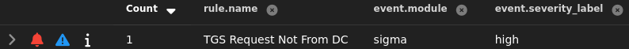

Active Directory¶
This section documents custom sigma rules and visualizations for my Active Directory environment. Each item includes the ATT&CK technique, signal logic, and validation evidence.
Brute Forcing Guest Account (T1110.001)¶
Sigma rule (winlog):
title: 'Multiple Failed Login Attempts in Active Directory'
id: 624d9509-7f05-47e7-932e-078e145a7a42
status: 'stable'
description: 'Detects multiple failed login attempts (Event ID 4625) that may indicate brute forcing against Active Directory.'
author: 'Devin'
date: '2025/10/18'
logsource:
product: windows
service: security
detection:
selection:
EventID: 4625
condition: selection
level: 'high'
Validation: Ran nxc ldap 192.168.25.137 -u 'Guest' -p /usr/share/wordlists/rockyou.txt --ignore-pw-decoding; alert fired and triaged.
{kind=link}
Kerberoast of svc-test (T1558.003 & T1110.002 & T1078.002)¶
Sigma rule (winlog):
title: 'TGS Request Not From DC'
id: a85a9ac4-a6be-440a-9b63-46943da0fe36
status: 'stable'
description: 'Indicative of potential kerberoast attack.'
author: 'Devin'
date: '2025/10/18'
logsource:
product: windows
service: security
detection:
selection:
EventID: 4769
name:
RelatedUser: 'WIN-LLBIAPV2E9D$'
condition: selection and not name
level: 'high'
Validation: Ran nxc ldap 192.168.25.137 -u 'Bob' -p '_________' --kerberoasting kerbroast.txt; alert fired and triaged.

{kind=link}
Upload of SharpHound (T1105 & T1047)¶
Sigma rule (sysmon):
title: 'SharpHound Uploaded'
id: 6bc8dee8-a7d2-409a-af69-473a9ab94dfa
status: 'stable'
description: 'SharpHound was uploaded through remote management shell'
author: 'Devin'
date: '2025/10/18'
logsource:
product: windows
service: sysmon
detection:
selection:
EventID: 11
Image|endswith : '\wsmprovhost.exe'
TargetFilename|endswith : '\SharpHound.exe'
condition: selection
level: 'high'
Validation: Ran upload SharpHound.exe from an evil-winrm shell; alert fired and triaged.
{kind=link}
DCSync (T1003.006 & T1078.002)¶
Sigma rule (winlog):
title: 'Active Directory Replication from Non Machine Account'
id: 88e4eb0a-8d72-4164-87d3-d5101e97a3b4
status: 'stable'
description: |
Triggers after Active Directory Replication for a non machine account (indicative of a DCSYNC attack)
author: 'Devin'
date: '2025/10/20'
logsource:
service: security
product: windows
detection:
selection:
EventID: 4662
winlog.event_data.ObjectServer: DS
winlog.event_data.Properties|contains: 1131f6aa-9c07-11d1-f79f-00c04fc2dcd2
dc:
User: WIN-LLBIAPV2E9D$
condition: selection and not dc
level: 'critical'
Validation: Ran impacket-secretsdump -just-dc LAB/svc-test:'_________'@WIN-LLBIAPV2E9D.lab.local; alert fired and triaged.

Pass-the-hash to Login as Domain Admin (T1550.002 & T1021.006)¶
Sigma rule (sysmon):
title: 'Admininstrator NTLM Network Login'
id: 6b53b892-2e05-44cd-bcfc-e274ee696ea9
status: 'stable'
description: 'Detects the Administrator account completing an NTLM network login, possibly indicating a pass-the-hash attack'
author: 'Devin'
date: '2025/10/18'
logsource:
product: windows
service: security
detection:
selection:
EventID: 4624
LogonType: '3'
AuthenticationPackageName: NTLM
TargetUserName: Administrator
condition: selection
level: 'high'
Validation: Ran evil-winrm -i 192.168.25.137 -u 'Administrator' -H '__________________’; alert fired and triaged.

Dashboard: Successful/Failed Login Attempts Timeline Bar Graph¶

Dashboard: TGS Ticket Requests Table¶
{kind=link}
Dashboard: Windows Remote Management Logins Table¶

{kind=link}